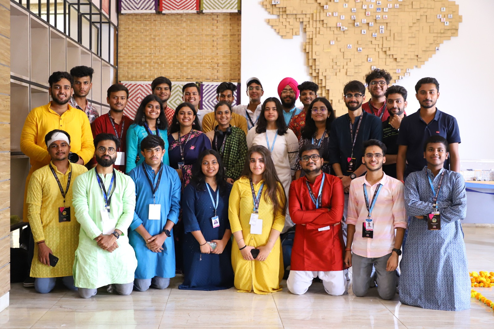
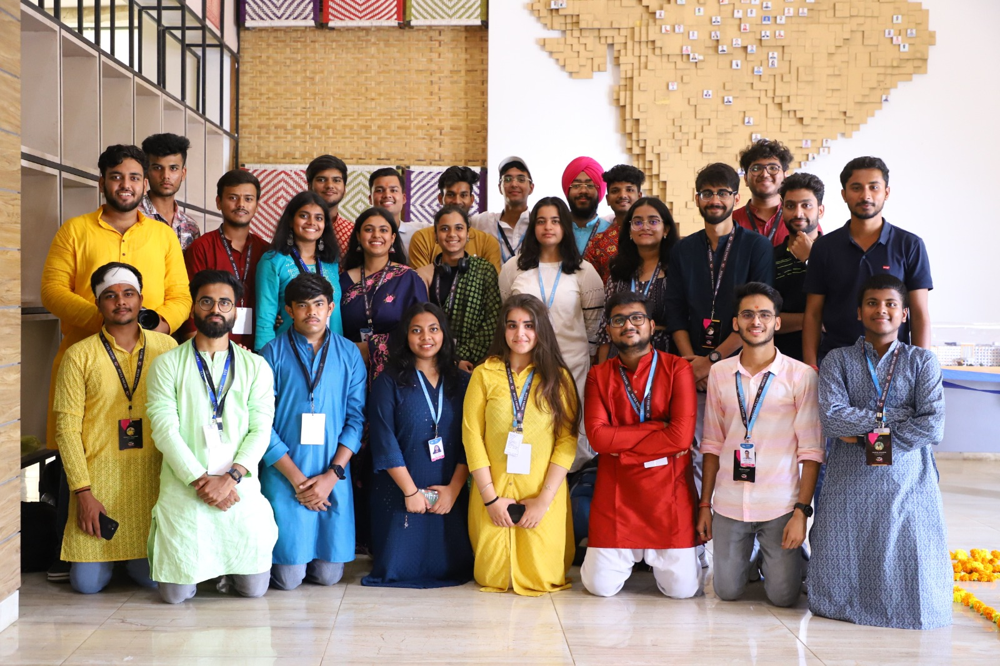

BIO
I am a pre-doctoral researcher at IIT Madras, India. Previously, I completed my integrated master’s degree in Computer Science and Cyber Security at VIT Bhopal.
I have a broad interest in theoretical computer science, particularly cryptography and complexity theory. My research generally focuses on cryptography, computer security, and related areas.
Beyond academic pursuits, I enjoy a few simple pleasures that add balance to my life.
I am an amateur photographer who enjoys capturing nature and landscapes through the lens of my camera. In the future, this website may grow to include a page showcasing some of my favorite shots. On weekends, I like to engage with my community or go for a relaxing swim to escape the heat.
To wind down at the end of the day, I enjoy reading. I am especially drawn to the way authors reveal personality and character through words, bringing situations and people vividly to life.
Pictures

Visit to National University of Singapore

 

Contact
Feel free to reach out for collaboration or other inquiries. Just ensure your message is specific, as generic or suspicious emails are automatically filtered. You can mail me at YASHKARTIK[dot]EDU[at]GMAIL[dot]COM.
My current works follow the Hardy–Littlewood rule; earlier cybersecurity publications (marked with an *) follow seniority order instead.
Drafts
SoK: Cryptographic Accumulators and Vector Commitments with Applications to Set Membership Proofs. In Preparation. With M. Campanelli, A. Datta, and D. Kolonelos
Publications
*Securing cyber-physical systems using artificial intelligence. Secure and Smart Cyber-Physical Systems, vol. 37, no. 38, p. 30, 2024. With P. Harshavardhanan, A. Datta, Y. Singh, C. Thota, and A. Pokale
*Digital Resilience: Navigating Disruption and Safeguarding Data Privacy. Springer Nature Switzerland. May 2024. ISBN: 9783031532900. DOI: 10/gtsk62. With S. K. Shandilya, A. Datta, and A. Nagar
Reflections
Not ready yet ... but it will be soon 👀 ... Come back later :)
Cryptography Resources
May the force of P and NP be with you